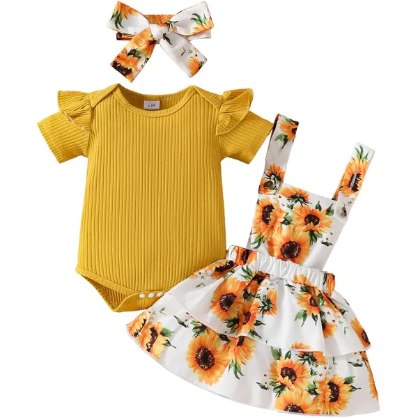
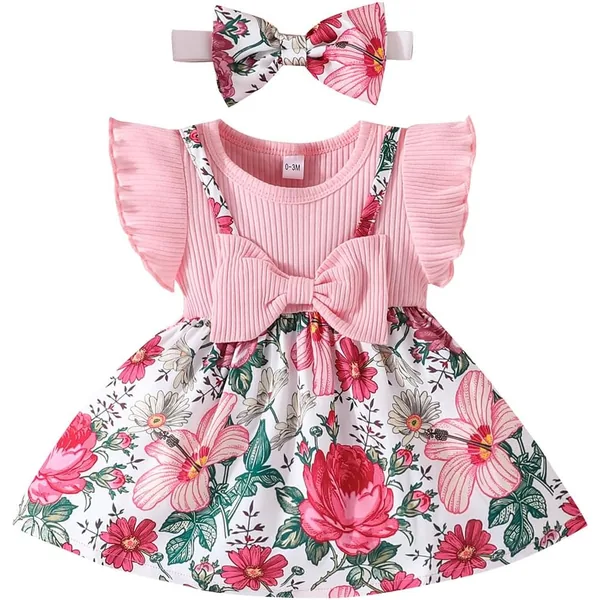
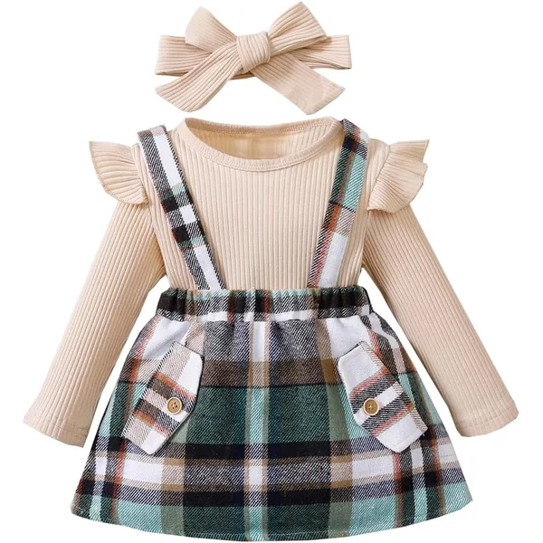
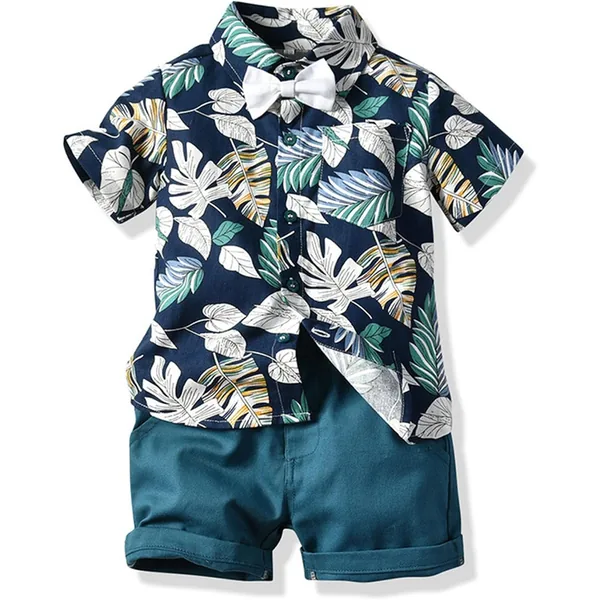
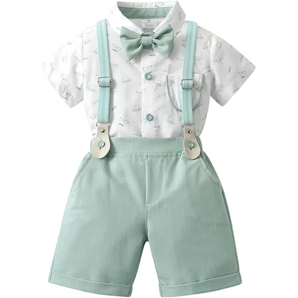
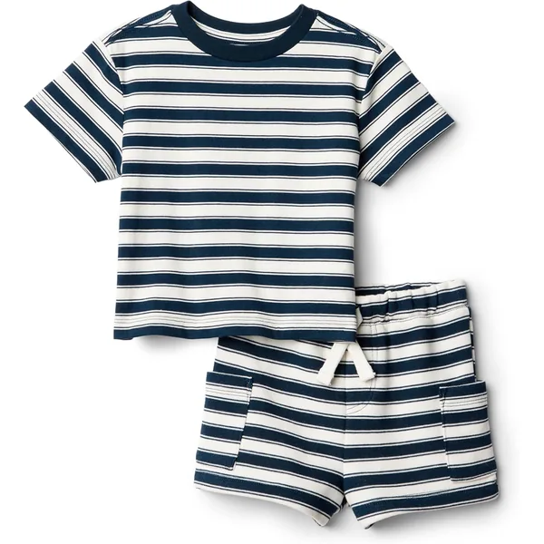
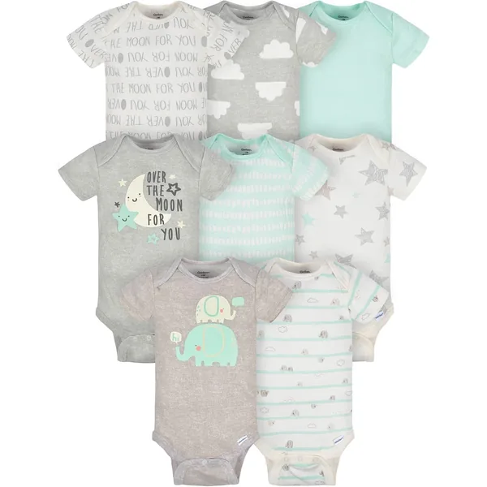

Para cada momento
Roupa de Bebé: Conjuntos e Packs
Conjuntos, t-shirts, calças, pijamas e fatos de treino — tudo o que o teu bebé precisa para estar sempre bonito e confortável.
Os links desta página são links de afiliado da Amazon: se comprares através deles recebemos uma pequena comissão, sem custo adicional para ti. Nenhuma marca paga para aparecer aqui — vê os nossos critérios.
Não sabes que tamanho comprar? Vê a tabela de tamanhos por altura e idade →Comparação rápida
Todos os produtos desta página numa tabela, para comparares antes de descer aos detalhes. Cada linha liga diretamente à Amazon.
Tabela comparativa9 produtos
| Produto | Secção | Melhor para | Material | Idades | Preço | Link para a Amazon |
|---|---|---|---|---|---|---|
| Conjunto Body Manga Curta + Saia Suspensórios + DiademaHEOXIN | Conjuntos | Presente de nascimento | Algodão | 3–18M | €€ | Ver na Amazon |
| Conjunto 3 Peças Camisa Folhos + Calças + DiademaDoresbebe | Conjuntos | Dia a dia | Algodão | 3–24M | €€ | Ver na Amazon |
| Saias Manga Longa Top de Renda com BabadosLUVCES | Conjuntos | Meses frios | Algodão e renda | 3–24M | €€ | Ver na Amazon |
| Conjunto Verão Algodão — Camisa Botões + CalçõesWinmany | Conjuntos | Fotografias de verão | 100% algodão | 6M–5A | € | Ver na Amazon |
| Conjunto Camisa Manga Curta + Calções AlgodãoVolunboy | Conjuntos | Dia a dia no verão | 100% algodão | 2–7A | € | Ver na Amazon |
| Conjunto Cerimónia — Camisa + Suspensórios + Calças + Laço - BonéVolunboy | Conjuntos | Batizados e cerimónias | Algodão e poliéster | 3M–6A | €€ | Ver na Amazon |
| Conjunto 2 Peças Algodão Orgânico UnissexoAmazon Essentials | Roupa Unissexo | Quem quer sustentável | Algodão orgânico | 0–24M | €€ | Ver na Amazon |
| Conjunto T-shirt + CalçõesAmazon Essentials × Sofia Grainge | Roupa Unissexo | Meias-estações | French terry | 0–3A | €€ | Ver na Amazon |
| Pack 8 Peças — Bodies AlgodãoGerber | Roupa Unissexo | Encher a gaveta | 100% algodão | 0–24M | € | Ver na Amazon |
Conjuntos — Menina
Conjuntos de três peças resolvem o problema de combinar roupa que ainda não conheces. Repara sempre na faixa de idades: muitos começam só aos 3 meses.

Conjunto Body Manga Curta + Saia Suspensórios + Diadema
- 3 peças
- 3–18M
- Com diadema
Porque escolhemos: chega pronto a oferecer: body, saia com suspensórios e diadema a condizer. É o conjunto que se tira da caixa e se veste para a primeira sessão de fotografias.
Ver na Amazon
Conjunto 3 Peças Camisa Folhos + Calças + Diadema
- 3 peças
- Com diadema
- Tecido respirável
Porque escolhemos: folhos sem exagero e tecido respirável, o que o torna usável num dia normal e não só em ocasiões. As três peças combinam sem ter de pensar no assunto.
Ver na Amazon
Saias Manga Longa Top de Renda com Babados
- 3 peças
- 3–24M
- Outono/inverno
Porque escolhemos: manga longa, xadrez e renda — a versão de inverno do conjunto de ocasião, numa faixa de idades invulgarmente larga para este tipo de peça.
Ver na AmazonConjuntos — Menino
O mesmo princípio: peças que já vêm combinadas. Para o verão português, algodão e manga curta; para cerimónias, vale a pena o conjunto completo.

Conjunto Verão Algodão — Camisa Botões + Calções
- 100% algodão
- Camisa + calções
- Verão
Porque escolhemos: camisa de botões e calções em algodão, com estampado havaiano. Aguenta uma tarde na praia e continua a ficar bem nas fotografias ao fim do dia.
Ver na Amazon
Conjunto Camisa Manga Curta + Calções Algodão
- 100% algodão
- 2–7 anos
- Manga curta
Porque escolhemos: algodão respirável numa faixa que vai até aos 7 anos. Lava-se muitas vezes sem desbotar — é o conjunto de usar, lavar e repetir.
Ver na Amazon
Conjunto Cerimónia — Camisa + Suspensórios + Calças + Laço - Boné
- 5 peças
- 3M–6A
- Com laço e boné
Porque escolhemos: cinco peças para um batizado sem ter de montar o look peça a peça. Camisa, suspensórios, calças, laço e boné já combinados entre si.
Ver na AmazonRoupa Unissexo
Cores neutras duram mais tempo, passam entre irmãos e combinam com tudo o que já tens. É também aqui que aparecem as opções de algodão orgânico mais acessíveis.
Vê as marcas de algodão orgânico que recomendamos →
Conjunto 2 Peças Algodão Orgânico Unissexo
- Algodão orgânico
- 2 peças
- Unissexo
Porque escolhemos: malha de algodão orgânico em neutros que combinam com o resto da gaveta. Para quem quer uma opção sustentável sem pagar preço de marca de autor.
Ver na Amazon
Conjunto T-shirt + Calções
- French terry
- T-shirt + calções
- Cores neutras
Porque escolhemos: french terry é mais encorpado que a malha normal, o que o torna útil nas meias-estações: quando um body fica pouco e um casaco já fica a mais.
Ver na Amazon
Pack 8 Peças — Bodies Algodão
- 100% algodão
- Manga curta
- Pack de 8
Porque escolhemos: oito bodies de uma vez, em cores neutras. É a compra que resolve a gaveta do dia a dia e acaba com as lavagens de emergência ao domingo à noite.
Ver na AmazonO que NÃO vale a pena em roupa de bebé
Vais receber muita roupa como prenda. Vale a pena não duplicar estas categorias.
- Jeans e calças rígidas. Desconfortáveis para gatinhar e um pesadelo nas mudas de fralda. A malha de algodão ganha sempre.
- Roupa com botões nas costas. Nenhum bebé fica confortável deitado em cima de botões. Verifica sempre onde fica o fecho.
- Peças com laços, cordões ou aplicações pequenas. Risco de asfixia e de estrangulamento, sobretudo em roupa de dormir.
- Comprar muito na estação errada. Um conjunto de verão em tamanho 12M comprado no inverno costuma nunca servir na altura certa.